Wykład dla rodziców
Mądre granie
Jak prowadzić dziecko przez świat gier
Dom Kultury Kolorowa · 6 listopada 2026 · obraz: materiały prasowe It Takes Two
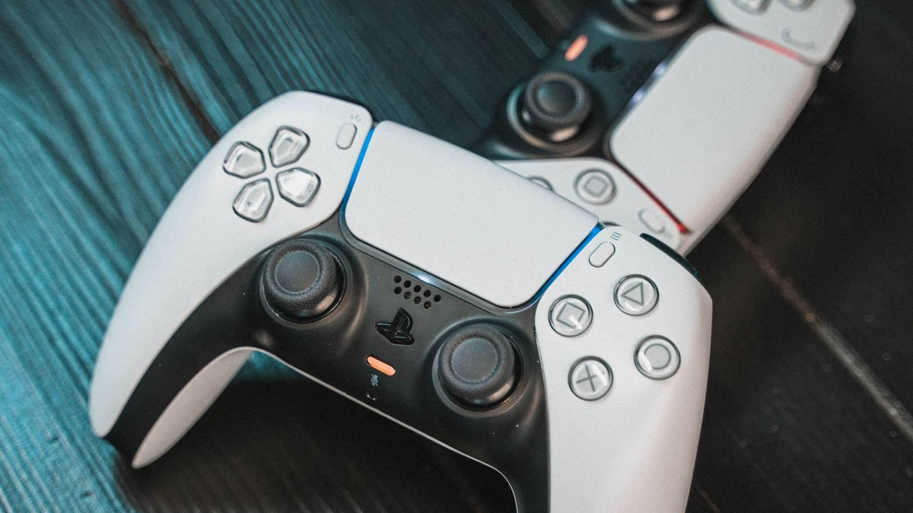
Kim jestem
Tata dziesięciolatki. Grałem dużo, około 15 lat.
Dziś mam własny system i gram czasem — i jest spoko.
słowa prowadzącego · fot. Pexels
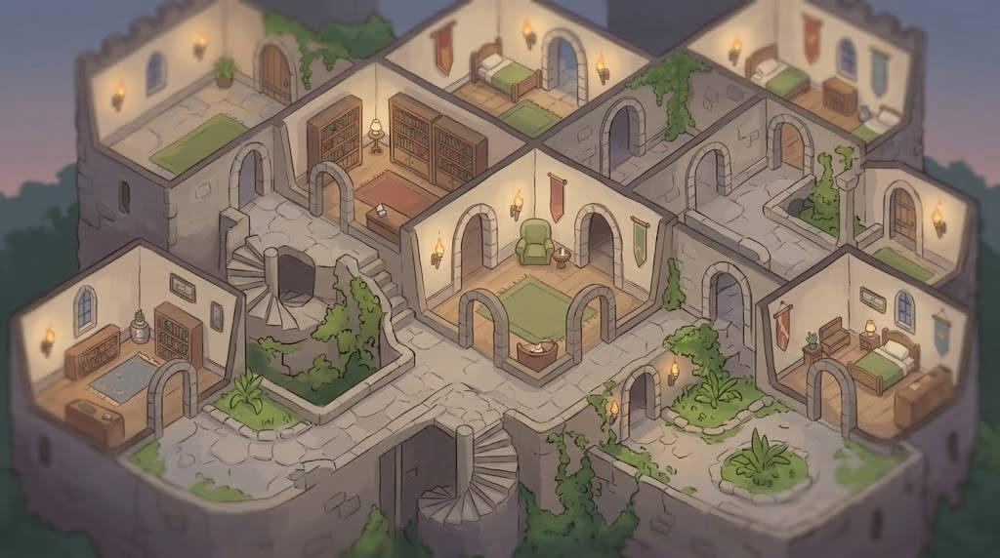
Z czym wyjdziecie
Trzy rzeczy na dziś
- Ramy jawne i zrozumiałe dla dziecka
- Jak odróżnić grę, która coś daje, od gry, która tylko zabiera czas
- Kilka gier na start
obraz wygenerowany (Gemini)
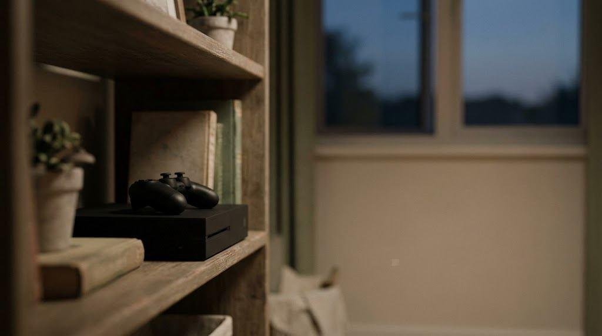
słowa prowadzącego · WHO: „zaburzenie związane z graniem” w klasyfikacji chorób ICD-11 (kod 6C51), obowiązuje od 1.01.2022 · obraz wygenerowany (Gemini)
Macie rację
Gry mogą działać jak narkotyk.
Ale zakazem nie nauczycie dziecka radzić sobie
z nimi wtedy, gdy już nie będziecie mogli zakazać.
Dlatego dalej: umowa, a nie dyktat.
Ćwiczymy samokontrolę, póki jesteśmy obok.
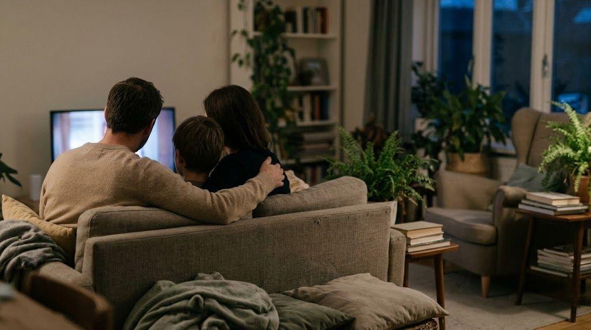
Pytanie wieczoru
Co jest na ekranie?
Sceny statyczne czy dynamiczne?
obraz wygenerowany (Gemini)
Statyczne i dynamiczne
Sam ekran nie uzależnia. Uzależniają sceny, które na to liczą.
Porównajcie stare i nowe bajki: Reksio i Psi Patrol.
słowa prowadzącego · rozmowa 5.11
Statyczne i dynamiczne · wersja B
Co sprawdzić w bajce i w grze
- Jak długo trwa jedno ujęcie lub scena?
- Czy coś cały czas wybucha, błyska, krzyczy?
- Czy jest chwila ciszy i czasu do namysłu?
- Czy kończy się, czy od razu zaczyna następny odcinek?
Co mówią badania
Po bajce pełnej nieprawdopodobnych zdarzeń małe dzieci gorzej radzą sobie z zadaniami na uwagę — od razu po obejrzeniu.
Źródło: Hinten i in. 2025, Dev Sci (metaanaliza, mały efekt d ≈ −0,24) · Lillard i Peterson 2011, Pediatrics
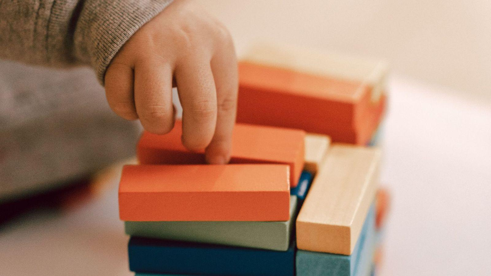
Moja definicja
„Granie powinno dawać trening, którego wyniki są przenaszalne na rzeczywistość.”
słowa prowadzącego · fot. Pexels
Co gry naprawdę trenują — dowody
Gry uczą konkretnych umiejętności. Najlepiej tych, które w grze ćwiczysz.
Ręka–oko
Po 5–10 godzinach gry w wyścigi lub strzelankę niegrający lepiej sterowali i trzymali pas jazdy; po grze niewymagającej refleksu — nie.
Li i in. 2016 · eksperyment, dorośli · siła: średnia
Precyzja dłoni
Chirurdzy, którzy najwięcej grali, robili na trenażerze operacji 47% mniej błędów.
Rosser i in. 2007 · 33 osoby, tylko związek, nie przyczyna · siła: słaba
Uwaga
Gry akcji poprawiają uwagę i spostrzegawczość: efekt prawdziwy, ale mały.
Bediou i in. 2023 · metaanaliza · siła: mocna, efekt mały (g = 0,30)
Wyobraźnia przestrzenna
Da się ją wytrenować, a gry są jednym ze skutecznych sposobów.
Uttal i in. 2013 · metaanaliza 217 badań · siła: mocna
Nauka
Gry edukacyjne uczą nieco lepiej niż zwykła lekcja.
Clark i in. 2016 · metaanaliza · siła: mocna, efekt umiarkowany
Współpraca
Gra we współpracy i gry z pomaganiem zwiększają potem pomaganie innym.
Gentile i in. 2009, Ewoldsen i in. 2012 · eksperymenty · siła: średnia
Czego nie dają: ogólnej inteligencji ani lepszych ocen same z siebie — zyskujesz to, co podobne do ćwiczonego.
Sala i in. 2018 (metaanaliza: brak przeniesienia na ogólne zdolności) · Li 2016 sprawdzone 5.11.2026 · fot. Pexels
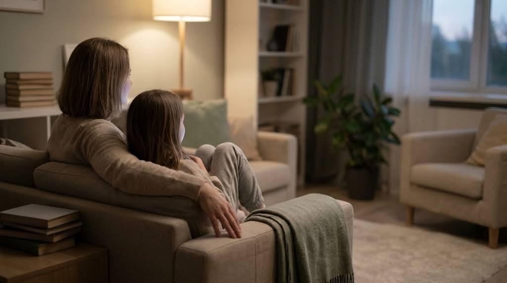
Mój cel
„Żeby to życie było najlepszą grą, w jaką grali.”
słowa prowadzącego · obraz wygenerowany (Gemini)
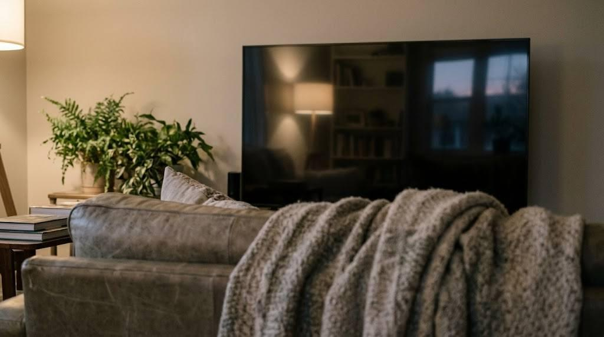
Zasada
„Rzeczywistość ma pierwszeństwo. Gra nie zając, nie ucieknie.”
słowa prowadzącego · obraz wygenerowany (Gemini)
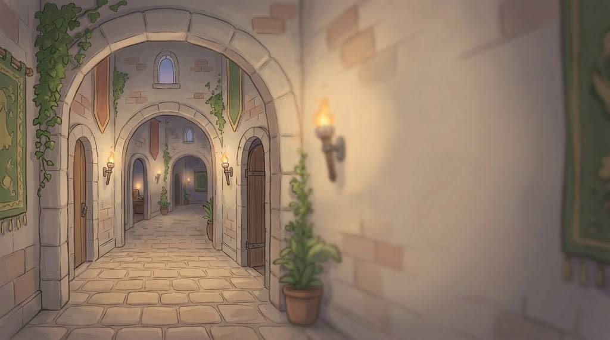
Pytanie przed zakupem
„Czy ta gra kiedyś się kończy?”
Jeśli nie — kto zdecyduje, kiedy koniec?
Niech gra się kończy jak dobra książka, którą wspominamy z sentymentem.
zasada prowadzącego · 5 pytań przed zakupem · obraz wygenerowany (Gemini)
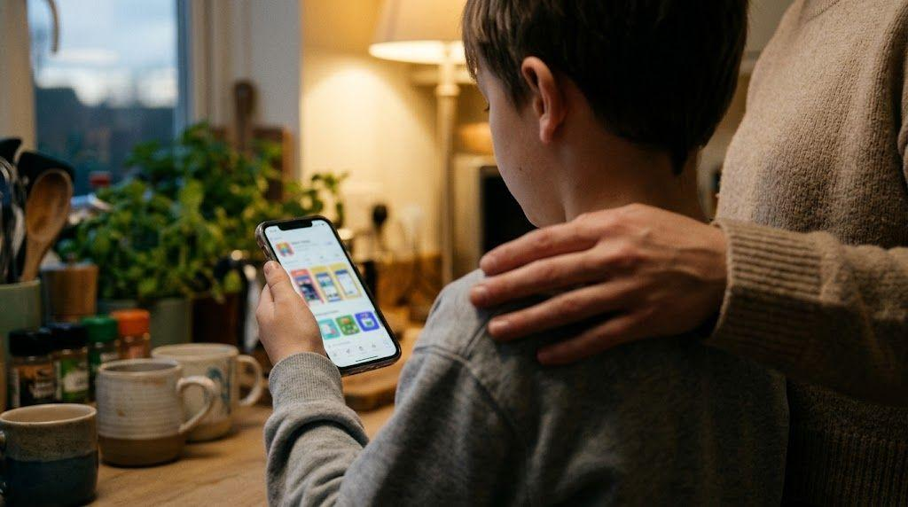
Płać raz
Na początku. Nie w trakcie.
zasada prowadzącego · obraz wygenerowany (Gemini)
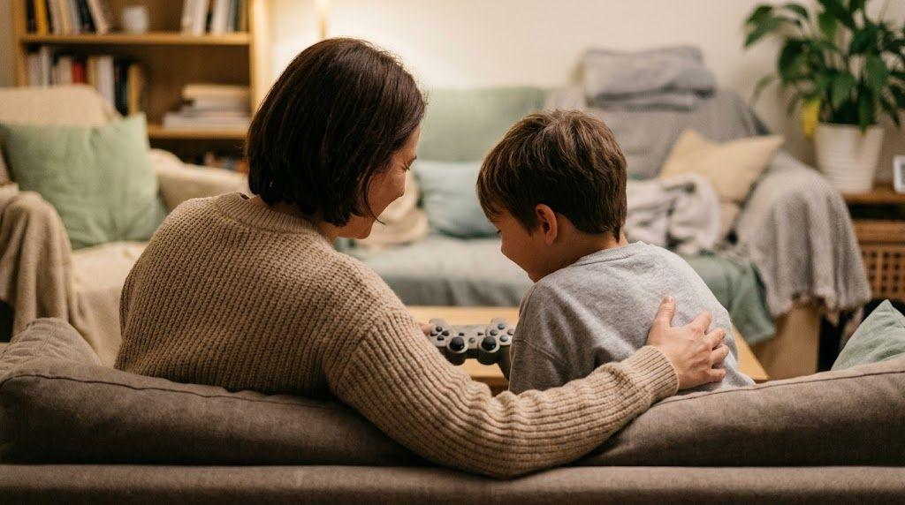
Grajcie razem
Wspólne granie zwiększa późniejszą współpracę.
wiele rodzajów dowodów, z trzech krajów · obraz wygenerowany (Gemini)
Zasada
Logika, strategia, ekonomia zamiast gier imersyjnych lub pompujących ego.
zasada prowadzącego 7 · zasada autora, nie pomiar
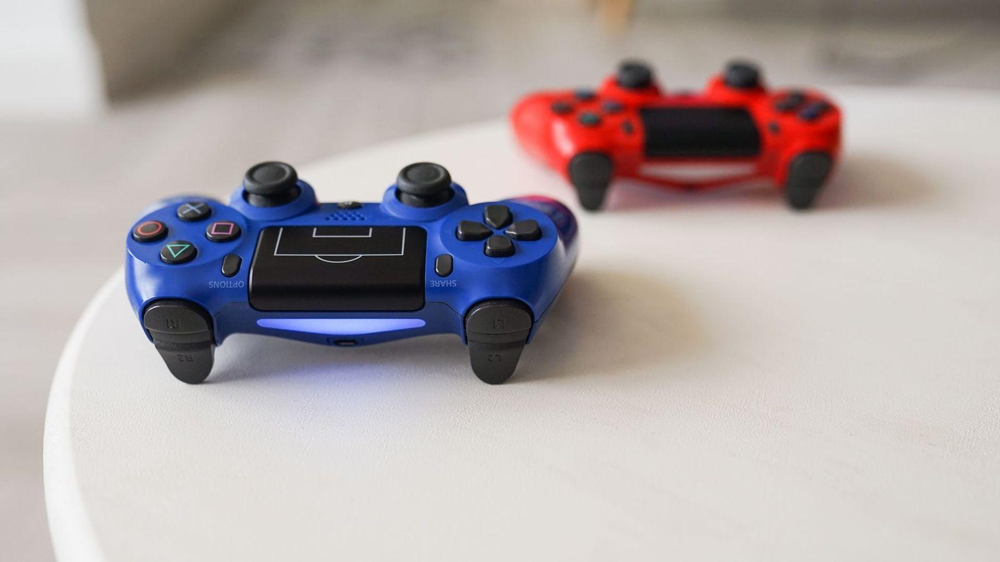
Co wybierać
Rodzaje gier, które rozwijają
- Łamigłówki logiczne — Portal — imersyjny wyjątek
- Programowanie przez zabawę — Human Resource Machine
- Strategia z końcem — kampanie Age of Empires II
- Współpraca na jednej kanapie — It Takes Two
- Budowanie i tworzenie — Minecraft Education, Scratch
- Gry, z których wychodzi nauka — Foldit
zasady prowadzącego 5 i 7 · fot. Pexels
Moja rada
Gry wciągające w system i imersję — później. Najpierw logika, strategia, wspólne granie.
zasada prowadzącego 7 („sprzeciw immersji”)
It Takes Two · dlaczego ją lubię
Bez rozmowy nie przejdziecie.
14+ wg serwisu dla rodziców · po polsku: napisy
doświadczenie prowadzącego · materiały prasowe It Takes Two
U mnie w domu
Tools Up! — remont mieszkania we dwoje, na czas.
Gramy też w Children of Morta, Kingdom Two Crowns i It Takes Two.
doświadczenie prowadzącego · materiały prasowe Tools Up!
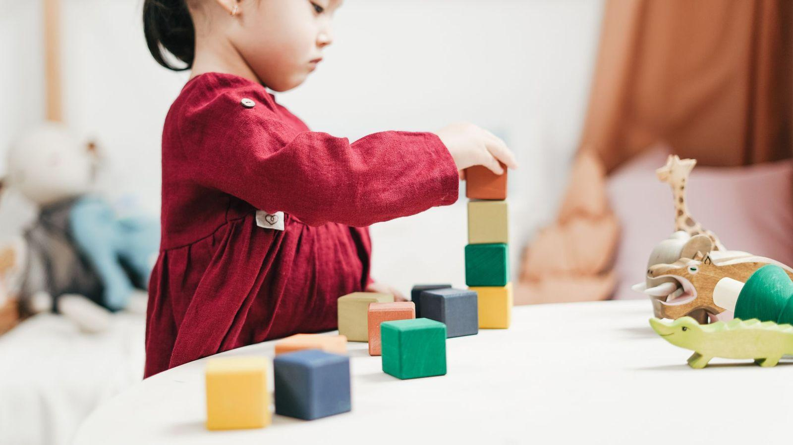
Najmłodsi, do ok. 7 lat
Krótko, spokojnie, z końcem — i na jednej kanapie.
- Untitled Goose Game — 6+, dwoje graczy, po polsku, do 60 zł
- Moving Out — 6+, do czworga, po polsku, 60–120 zł
- Heave Ho — 6+, do czworga, bez czytania, do 60 zł
Źródło: Steam PL 5.11.2026 · fot. Pexels
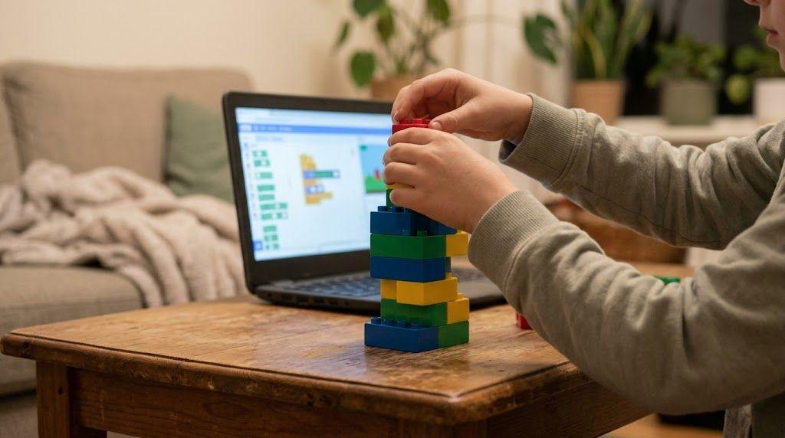
Szkoły już grają
Minecraft Education — ta wersja ze szkół.
słowa prowadzącego · obraz wygenerowany (Gemini)
Planszówka na ekranie
Cyfrowa planszówka spełnia nasze zasady.
- Płacisz raz, jak za pudełko: Kingdomino i Carcassonne po 45,99 zł, Wingspan 59,99 zł
- Partia ma koniec: 15–45 minut i ekran gaśnie sam
- Dwie osoby, jeden ekran, jedna kanapa — zamiast czatu z obcymi
- Komputer pilnuje zasad — łatwiej poznać większą grę.
- Na dużym ekranie dotykowym (tablet, duży smartfon) gra się jak przy stole.
zasada prowadzącego 5: „Zbieraj gry z trybem local co op lub ekranizacje planszówek” · ceny Steam PL
Z ekranu na stół
Ekran uczy zasad, stół daje resztę wieczoru.
| Na ekranie | Na stole | Co zostaje przy stole |
|---|---|---|
| Catan Universe (10+) | Osadnicy z Catanu | negocjacje i handel |
| Wsiąść do Pociągu, aplikacja (do 60 zł) | Wsiąść do Pociągu: Europa | dziecko uczy babcię |
| Wingspan (10+, do 60 zł) | pudełko Wingspan | poznawanie ptaków i liczenie punktów |
| Carcassonne, aplikacja (u mnie: stara wersja na Androida) | pudełko Carcassonne | układanie mapy z kafelków i liczenie punktów |
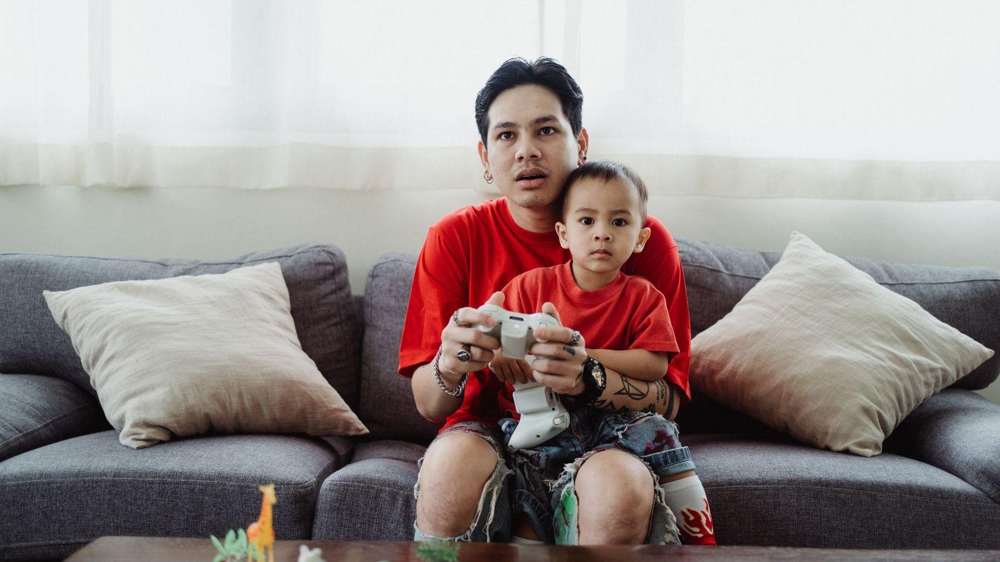
Wiek
Wiek na pudełku mówi o treści. O tym, czy gra coś daje — nie.
fot. Pexels
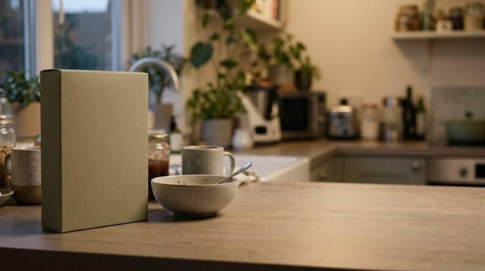
Gdzie sprawdzić grę
Zagraniczne
- Common Sense Media — wiek oczami rodzin, opis treści i zakupów
- Family Gaming Database — gry opisane z myślą o rodzinach
- PEGI — oficjalna kategoria wieku z pudełka
- HowLongToBeat — ile godzin trwa ukończenie
Polskie
- GRYOnline.pl — największe polskie recenzje z ocenami
- CD-Action — recenzje i teksty po polsku
- Gram.pl — recenzje i przegląd promocji
- Saferinternet.pl i FDDS — poradniki dla rodzica
wszystkie strony działały 5.11.2026 · polskiego serwisu z ocenami gier dla dzieci nie znaleziono · obraz wygenerowany (Gemini)
Jak szukać: filtry, nie reklamy
Common Sense Media: najpierw wiek dziecka, potem granice treści
Family Gaming Database: zaznacz, czego unikać — skrzynki, obcy w sieci, hazard, reklamy
Metacritic: ranking krytyków z filtrem platformy i roku — bez filtra wieku
Zrzuty ekranu: commonsensemedia.org, familygamingdatabase.com, metacritic.com — 5.11.2026
Steam: filtry dla rodzica
Szukaj gry pod kanapę, nie pod czat z obcymi.
- Players → Local Co-Op: gra we dwoje na jednym ekranie
- Type → Games: bez programów i dodatków
- Controller Support: działa z padem
Gatunek (Strategy, Simulation) wybierz z dzieckiem.
zasada prowadzącego 12: obsługa pada i local co-op wyżej w rankingu
Ranking krytyków a ocena dla rodziców
Najwyżej oceniane gry wszech czasów to w większości gry 18+.
| Gra | Krytycy (Metacritic) | Common Sense Media |
|---|---|---|
| Grand Theft Auto IV | 98/100 | 18+ |
| Grand Theft Auto V | 97/100 | 18+ |
| Red Dead Redemption 2 | 97/100 | 18+ |
Najpierw wiek (CSM, PEGI), dopiero potem ocena krytyków.
Źródło: metacritic.com/browse/game/allscore, commonsensemedia.org — pobrane 5.11.2026
Klasyki wszechczasów zgodne z naszymi zasadami
| Rodzaj | Gra | Wiek | Cena | Po polsku |
|---|---|---|---|---|
| Logika | Portal 2 | 10+ | do 60 zł | tak |
| Logika | The Witness | 12+ | pow. 120 zł | tak |
| Strategia | Civilization IV | 12+ | do 60 zł | ? |
| Strategia | XCOM 2 | 14+ | 60–120 zł | ? |
| Na kanapie | It Takes Two | 12+ / 14+ | pow. 120 zł | napisy |
| Na kanapie | Divinity: Original Sin 2 | 16+ | pow. 120 zł | napisy |
| Budowanie | Minecraft | 8+ | do 60 zł | tak |
| Budowanie | Terraria | 9+ | do 60 zł | nie |
Źródło: IGN Top 100, Steam Top 250, Metacritic · ceny Steam PL / App Store PL 5.11.2026
Dlaczego odradzam konsole
Gier, które uczą myśleć, najwięcej jest na komputerze.
Na konsoli mało
Z 13 polecanych gier: wszystkie na PC, 9 na Switchu, 8 na Xboxie, 7 na PlayStation (na PS5 natywnie tylko 2)
Na konsoli tworzysz w klatce
bez Scratcha, Godota i swobodnych modów; są tylko zamknięte narzędzia, np. Game Builder Garage
Uczciwie: plus konsoli
dwa pady i jedna kanapa; planszówki jak Wingspan są na każdej konsoli
liczby: Wikipedia, strony producentów, 5.11.2026
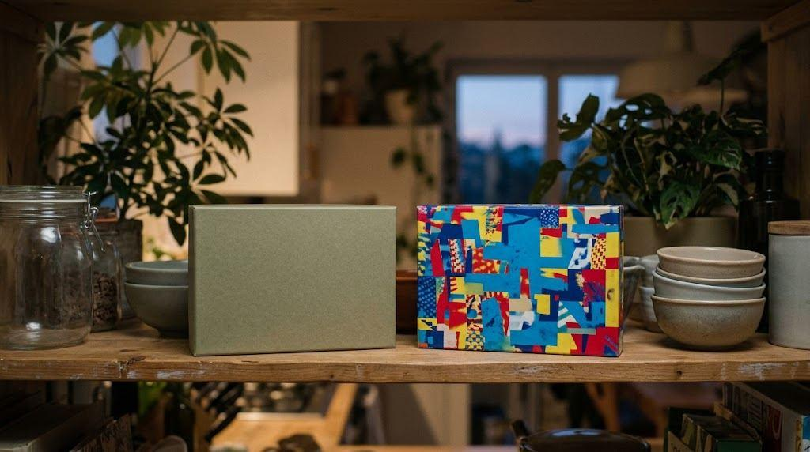
Moje rady na zakupy
Taniej i lepiej: stare, oryginalne, na telefonie.
Odradzam
Gry na podstawie popularnych filmów i seriali.
Ostrożnie
Kolejne części rzadko kiedy dają radę.
Przebierajcie w starszych
Starsze gry są tanie i mają małe wymagania sprzętowe.
Telefon zamiast konsoli
Android z wyjściem wideo na telewizor; trzymajcie stare telefony. Gry na telefon są często dużo tańsze.
Rady prowadzącego z doświadczenia, nie wyniki badań · obraz wygenerowany (Gemini)
Zapytaj AI, zanim kupisz
Nie pamiętasz pytań? Weź je w telefonie.
Zeskanuj kod — prompt pojawi się w telefonie jako tekst. Skopiuj go do ChatGPT, Gemini albo innego asystenta AI i wpisz tytuł gry.
Prompt testowany na It Takes Two, Fortnite i Roblox · kod zawiera cały tekst: działa bez internetu i bez logowania
Jedno ustawienie na dziś
Zgoda rodzica przy każdym zakupie.
Narzędzie pilnuje ramy. Nie zastępuje rozmowy.
Źródło: dokumentacja producentów · brak badań skuteczności · fot. Pexels
Drugi prompt · darmowe gry
Pełne gry za darmo, na stałe — bez haczyka na dopłaty.
Zeskanuj kod, wklej tekst do czatu AI i wpisz platformę oraz wiek dziecka. AI sprawdzi Epic, Steam, GOG, Google Play i itch.io i odsieje gry free-to-play.
Można go ustawić jako zadanie co tydzień, np. w Gemini (zaplanowane działania).
Na podstawie cotygodniowego promptu prowadzącego (przegląd promptów Gemini) · kod zawiera cały tekst: działa bez internetu i bez logowania
Fortnite: 4 z 13 mechanizmów
Jak gra trzyma dziecko
- Zakupy, w które łatwo wejść, a trudno się wycofać
- Karnet sezonowy: nagrody przepadają, jeśli nie grasz
- „Prawie wygrałeś” — zachęta do jeszcze jednej próby
- Wydarzenia „tylko teraz”, potem znikają
obraz: fortnite.com. Materiał nieoficjalny, nie jest wspierany przez Epic.
Na szczycie rankingu
21 pkt
Coin Master i Township
suma natężenia 6 z 13 mechanizmów (każdy 0–5) · za nimi Genshin Impact, 20
obrazy: Google Play (Moon Active, Playrix)
Gra sprzedaje czekanie
12 dni
tyle trwa ulepszenie ratusza z poziomu 17 na 18 w Clash of Clans — albo płacisz klejnotami, żeby skończyć od razu.
Im wyższy poziom, tym dłuższe czekanie. Ratusz 16: 9 dni albo ok. 1250 klejnotów — a klejnoty kupuje się za prawdziwe pieniądze.
Źródło: Clash of Clans Wiki (Fandom), „Town Hall” i „Gems”, pobrane 5.11.2026 · klejnoty: kalkulator społeczności wiki
Wędkowanie gracza
Po co grze wędkowanie, gotowanie i tysiąc zadań?
Żeby zatrzymać Cię dłużej.
słowa prowadzącego
Model biznesowy
„Darmowa” gra stoi na mniejszości, która wyda dużo.
10% graczy = 61,4% wszystkich wydatków
Źródło: Meschik i in. 2026, PMID 42698434 · jedna ankieta, 2308 uczniów w Austrii · fot. Pexels
Moje zdanie
„Nie ma darmowych gier. Każda coś kosztowała jej twórcę.”
Świadomie nagradzając, promujecie lepszy świat gier.
słowa prowadzącego
Pytanie z sali
„Skrzynki to hazard?”
Dla mnie: nagrody za nic to żerowanie na psychice niedojrzałego umysłu.
Źródło: 03 §6 — w polskiej ustawie nie są hazardem · zdanie drugie: słowa prowadzącego z tablicy 5.11
Źródło: pegi.info, sprawdzone 2026-11-01 · dwa źródła · obraz wygenerowany (Gemini)
Nowość
Od czerwca 2026 gry z płatnymi
losowymi przedmiotami dostają
PEGI 16.
Szukaj napisu „paid random items”. Zasada nie działa wstecz.
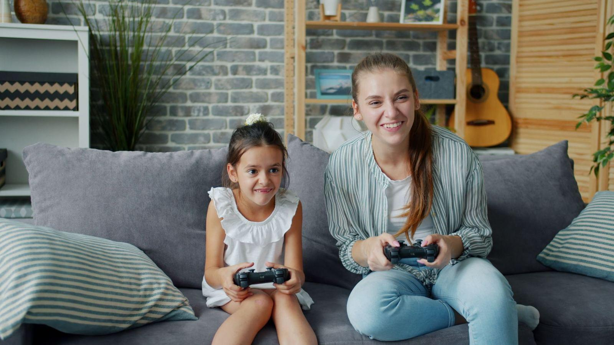
Moja zasada
„Rodzic wyprzedza dziecko w grach o dwa kroki.”
Samodzielne kupowanie gier — dopiero blisko dorosłości.
słowa prowadzącego · fot. Pexels
Do sali
Czy gracze mogą coś zmienić?
Star Wars Battlefront II, listopad 2017: tak.
1 · Co zrobił wydawca
Gra kosztowała jak pełna, a ulubione postacie trzeba było odblokować: około 40 godzin grania na samego Dartha Vadera albo płatne skrzynki z losowymi nagrodami.
2 · Co zrobili gracze
Masowo protestowali. Odpowiedź wydawcy na Reddicie stała się najbardziej minusowanym komentarzem w historii serwisu. O grze mówili nawet politycy.
3 · Co się zmieniło
Dzień przed premierą wydawca wyłączył zakupy. Od 2018 r. płaci się już tylko za wygląd postaci, nie za przewagę.
Głos graczy — i rodziców, którzy nie kupują — działa.
Źródło: CNBC 17.11.2017 · Wikipedia: Star Wars Battlefront II (2017)
Roblox w rankingu
0 z 13
To nie znaczy „bezpieczny”.
Nikt nie zebrał dowodów. Baza mówi: ostrożnie — czat z obcymi, waluta Robux.
brak dowodów to nie dowód braku
Chwalmy oryginały
Klonowanie cudzego pomysłu bywa kradzieżą. Gry nie powinny tego promować.
Oryginał · autor
Kopia
→
→
→
Kupujcie oryginał — nagradzacie tego, kto pomysł wymyślił.
słowa prowadzącego · przykłady wskazane przez prowadzącego · Kotaku, N. Carpenter, 15.07.2026 (Roblox); pozew Nintendo: PC Gamer, Pocket Tactics, 09.2024
Mniej, ale lepiej · gry niezależne (indie)
Gra, która robi jedną rzecz bardzo dobrze — zamiast wszystkiego byle jak.
Tak często robią to gry niezależne: małe studia, jeden pomysł dopracowany do końca, płacisz raz.
słowa prowadzącego · pochwała gier indie: Twoja uwaga 6.11 · przykłady z gier na tych slajdach
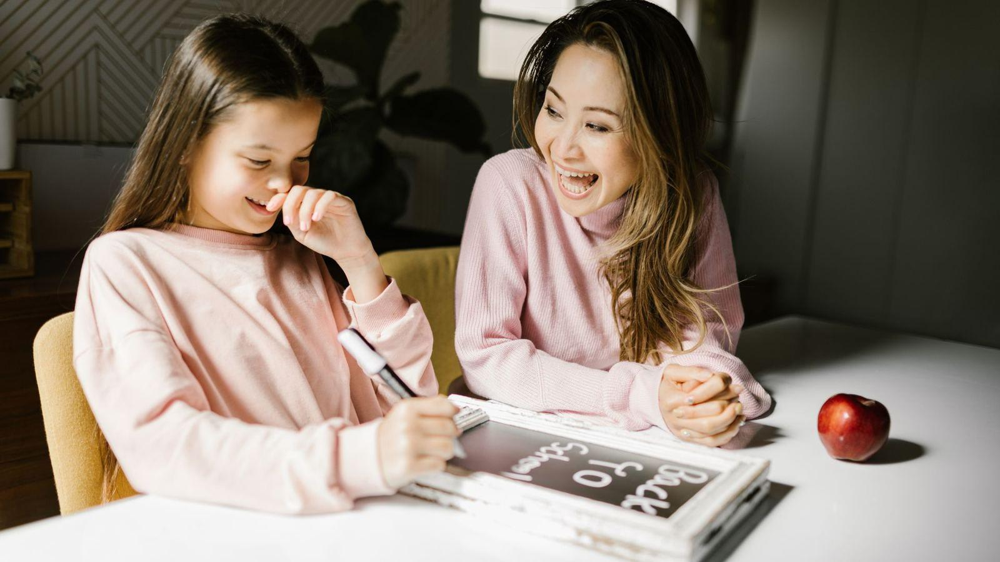
fot. Pexels
Umowa zamiast zakazu
Nie zakazuj gier.
Wybierz z dzieckiem lepsze.
Badanie · umowa zamiast dyktatu
1987 nastolatków
Odrzucenie przez rodzica przewidywało później więcej objawów problemowego grania.
Źródło: Wang, Zhou i Chen 2026, Addictive Behaviors, PMID 42456204 · jedno badanie, trzy fale, Chiny · związek, nie przyczyna · fot. Pexels
Umowa zamiast dyktatu — skąd to wiemy
Trzy pomiary w ciągu roku: 1987 chińskich nastolatków, średnio 12 lat. Ci, którzy czuli się odrzuceni przez rodziców, kilka miesięcy później mieli więcej objawów problemowego grania. Działało to też w drugą stronę: im więcej objawów, tym później większe odrzucenie — częściowo przez gorsze zaangażowanie w szkole. Związek w obu kierunkach: błędne koło, nie wyrok.
1987 to cała próba, która przeszła trzy fale. Ilu zaproszono — praca tego publicznie nie podaje.
Siła: jedno badanie, trzy fale, związek — nie przyczyna; Chiny, nie Polska · Wang i in. 2026, PMID 42456204
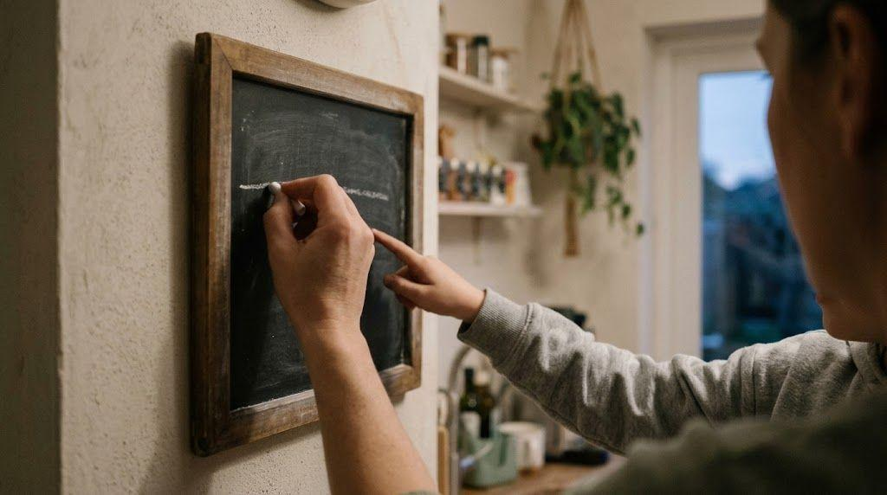
Rama
Ramy czasowe ustalone z dzieckiem, przemieszane z obowiązkami.
zasada prowadzącego 10 · obraz wygenerowany (Gemini)
Moje doświadczenie · tablica obowiązków
Spisaliśmy z córką wszystkie jej obowiązki na tablicy, którą ma zawsze pod ręką.
Co to dało
„Bardzo pomogło.”
Wszystkie obowiązki w jednym miejscu, dostępnym dla dziecka.
Moje powiedzenie
„Najpierw obowiązki, a później inne przyjemności.”
Świadomie zmienione powiedzenie — zwykle mówi się „najpierw obowiązki, potem przyjemności”.
Doświadczenie prowadzącego z córką, nie badanie · fot. Pexels
Zima i lato
Budżet gier zmienia się z porą roku.
Więcej w ciemnej połowie roku, wyraźnie mniej latem.
zasada prowadzącego 13 · nikt jej nie badał · fot. Pexels
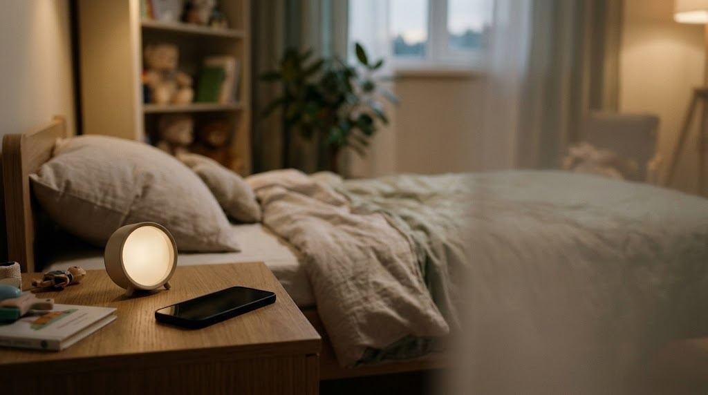
Źródło: Pattinson i in. 2026, BMC Public Health, PMID 42046038 · jedno badanie, ankieta, tylko związek · obraz wygenerowany (Gemini)
Sen · badanie
3324opiekunów
Dzieci od 6 miesięcy do 6 lat,
Australia: ekran w sypialni wieczorem
szedł w parze z krótszym i późniejszym snem.
Ekran w sypialni a sen — skąd to wiemy
Ogólnokrajowa australijska ankieta rodzin z dziećmi od 6. miesiąca do 6. roku życia. Z 3388 ankiet odrzucono te z niemożliwymi sumami godzin — zostało 3324. U pięciolatków prawie 40% używało ekranów w sypialni. Im więcej ekranów ręcznych w sypialni i częstsze korzystanie wieczorem, tym krótszy nocny sen, późniejsze zasypianie i więcej problemów ze snem.
Dane dotyczą małych dzieci, nie 6–14 lat. Doniesienia rodziców, jeden moment w czasie.
Siła: jedno duże badanie przekrojowe, związek — nie przyczyna · Pattinson i in. 2026, BMC Public Health, PMID 42046038
Wzrok · światło dzienne chroni oczy
Ile pierwszoklasistów w ciągu 3 lat zostało krótkowidzami?
39,5%
szkoły bez zmian
(zwykły plan lekcji)
→
30,4%
szkoły z dodatkową lekcją
40 minut dziennie na dworze
Czyli o prawie jedną czwartą mniej nowych krótkowidzów — tylko dzięki codziennemu wyjściu na zewnątrz.
Źródło: He i in., JAMA 2015, PMID 26372583 · 12 szkół w Kantonie (Chiny), 1903 dzieci w wieku 6–7 lat, szkoły losowane · jedno duże badanie
Pytanie z sali · wersja C
„Czy ekran psuje wzrok?”
Mocniejszy dowód mamy na to, co chroni: czas na dworze.
Źródło: He 2015 · przegląd 120 badań w bazie nie obejmuje rzetelnie migotania
Migotanie ekranu (PWM)
Wiele telefonów ściemnia ekran migotaniem. Szukajcie ponad 400 Hz.
Bestsellery: iPhone 16 i 17e 60 Hz · Galaxy A17 5G 120 · iPhone 17, Galaxy S25 240 · Galaxy A16 5G 360
Bez wykrytego migotania: Redmi 14C, Galaxy A06, Galaxy A14 5G
Sprawdź swój telefon: im wyższa liczba Hz, tym łagodniej; „0” = bez wykrytego migotania. Pytajcie o PWM przy zakupie — także lamp LED.
Siła: dyskomfort u osób wrażliwych (np. z migreną) udokumentowany; szkoda u zdrowych — nieustalona · 400 Hz: rada prowadzącego (post na FB) · pomiary: Notebookcheck, ranking PWM · popularność: Counterpoint Research 2025–2026
Gra jako symulator
Symulator uczy lepiej, gdy po nim jest rozmowa.
Mar & Oatley 2008 — teoria
Do sali
Co robi Wasze dziecko, gdy przegrywa?
Pytajmy o emocje — to część treningu.
zasada prowadzącego 8: pytać o emocje
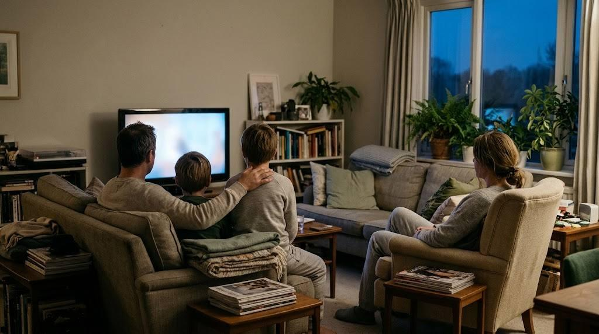
Poziom trudności
Dobierzcie poziom razem: trochę ponad to, co dziecko już umie.
Za łatwo
Nic nie uczy. Zostaje tylko klikanie po nagrody.
W sam raz
Trzeba się wysilić, ale co jakiś czas się udaje. Tu jest trening.
Za trudno
Za szybko zużywa motywację dziecka.
Tryb łatwy albo pomocy w grze to nie wstyd — to regulacja trudności.
słowa prowadzącego · podobnie mówią teorie „strefy najbliższego rozwoju” (Wygotski) i „przepływu” (Csikszentmihalyi) — teorie, nie pomiar · obraz wygenerowany (Gemini)
Po co gramy
„Gramy dla zrównoważonej przyjemności, a nie by karmić perfekcjonizm lub pychę.”
słowa prowadzącego
Przemoc · dwie analizy
mały albo żaden
związek gier z agresją — nauka się tu spiera
Źródło: Prescott 2018 (24 badania): mały, trwały · Ferguson 2015: brak efektu
Gry a agresja — dwie metaanalizy, dwa akcenty
Prescott i in. 2018
24 badania z pomiarem w czasie, ponad 17 tys. osób w wieku 9–19 lat. Granie w brutalne gry przewidywało później agresję — efekt mały, po uwzględnieniu innych czynników nadal widoczny.
Ferguson 2015
101 badań u dzieci i nastolatków. Efekty minimalne, a do tego stronniczość publikacji: łatwiej opublikować wynik „jest efekt”.
Uczciwa wersja: jeśli efekt istnieje, jest mały.
Prescott, Sargent i Hull 2018, PNAS · Ferguson 2015, Perspectives on Psychological Science
Gdzie dzwonić
Numery pomocy
| Numer | Dla kogo | Kiedy |
|---|---|---|
| 800 100 100 | dla rodziców, w sprawie dzieci | pon.–czw. 10–14, pt. 12–15, bezpłatny |
| 801 889 880 | uzależnienia behawioralne | codziennie 17–22, płatny wg taryfy |
| 116 111 | dla dzieci i młodzieży | całą dobę, bezpłatny |
| 800 12 12 12 | Rzecznik Praw Dziecka | całą dobę, bezpłatny |
Źródło: 800100100.pl, kcpu.gov.pl, 116111.pl, 800121212.pl · sprawdzone 2026-11-05
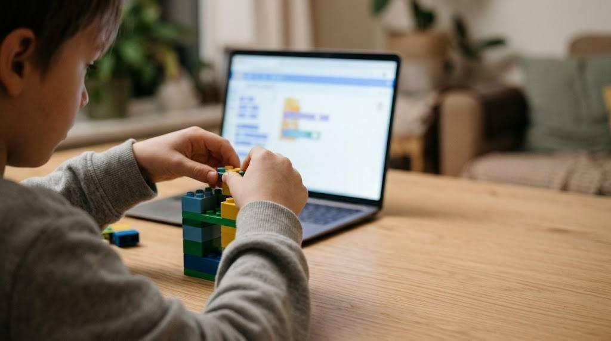
Tworzenie zamiast grania
Od klocków do silnika
- Scratch
- MakeCode Arcade
- Game Builder Garage
- Mario Maker 2
- Godot
część cen niesprawdzona · czy tworzenie uczy więcej niż granie — nie zbadano · obraz wygenerowany (Gemini)
Wstęp do AI · rozmowa z maszyną
Od promptu do programu
Przekonujesz AI słowami
- Gandalf — wyciągasz hasło od strażnika-AI; darmowa, w przeglądarce, razem przy jednym ekranie
- Event[0] — rozmowa z AI statku; ok. 4 h, offline, po angielsku
- inZOI — opisujesz postaci, AI daje im myśli; PEGI 12, mocny komputer
- Suck Up! — przekonujesz głosem wampiry; głos idzie do chmury, brak PEGI — tylko przy rodzicu
Układasz zachowanie maszyny
- Gladiabots — ustalasz reguły, według których walczą roboty, bez kodu (10+)
- Human Resource Machine — układasz polecenia krok po kroku (8+)
zrzut: materiały prasowe Human Resource Machine
Sea Hero Quest — gra, która zbierała dane o mózgu
Gracz steruje statkiem. Gra zapisuje, jak dobrze się orientuje.
1 · Skala
Zagrało 3,9 mln osób w wieku 18–99 lat. Tak duża „próbka” pokazała, jak nawigują zdrowi ludzie w każdym wieku.
2 · Alzheimer
Zdrowe osoby z genem ryzyka Alzheimera gorzej trzymały kurs w grze. Zwykłe testy pamięci tej różnicy nie wykryły.
3 · Miasto a wieś
400 tys. graczy z 38 krajów: wychowani poza miastem nawigowali lepiej niż ci z miast.
Czyli gra pomogła jako pomiar: daje szansę wcześniej zauważyć pierwsze zmiany — zanim pokażą je zwykłe testy.
To nie badanie na dzieciach — ale dobre pytanie do każdej gry: do czego ona służy?
Siła: projekt naukowy, recenzowane publikacje; gracze sami się zgłaszali · Coughlan 2019 PNAS (Alzheimer), Coutrot 2022 Nature (miasta), Spiers 2023
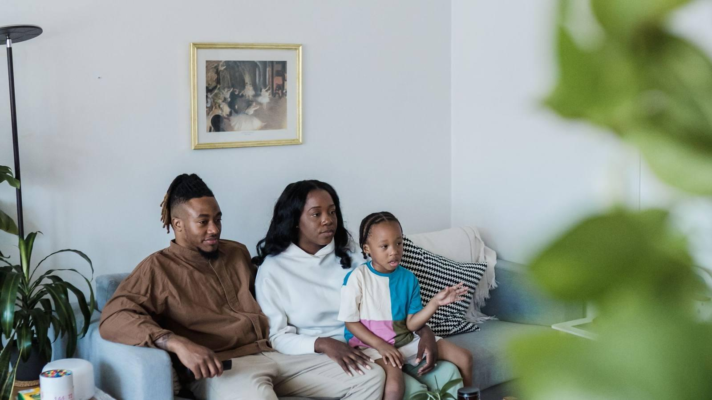
Oglądać czy grać?
Czy nie lepiej, żeby dziecko samo grało i wymyślało, niż patrzyło, jak ktoś gra i komentuje?
Jak z piłką nożną: mecz warto obejrzeć, żeby podpatrzyć zagranie. Ale grać uczysz się na boisku.
Film, który uczy triku, to lekcja. Film, w którym ktoś tylko gra i krzyczy, to oglądanie cudzej zabawy.
Kanał dziecka w 5 minut
- Strona „O kanale”
- 10 ostatnich tytułów
- Opisy filmów
- Jakie gry dominują
- Uczy czegoś czy tylko gra?
Pytanie i porównanie z piłką: moje zdanie, nie wynik badań · fot. Pexels
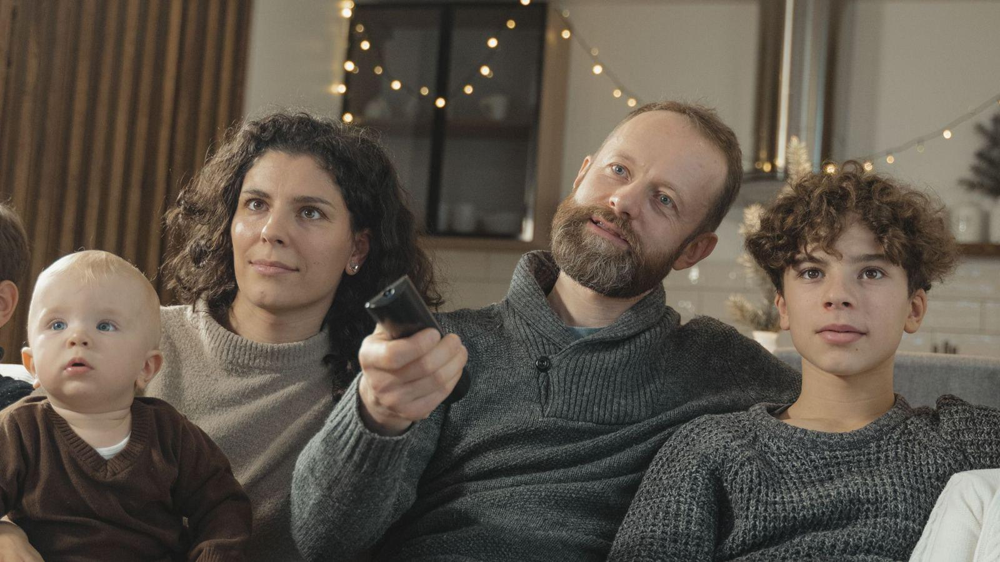
Na koniec
„Żeby to życie było najlepszą grą, w jaką grali.”
słowa prowadzącego · fot. Pexels
Pytania
Wasza kolej.
fot. Pexels
Źródła · 1/2 · badania
Co gry trenują
Li, Chen i Chen 2016, Psychological Science — gry akcji a sterowanie ręka–oko
Rosser i in. 2007, Archives of Surgery — granie a błędy chirurgów na trenażerze
Bediou i in. 2023, Technology, Mind, and Behavior — gry akcji a uwaga (metaanaliza)
Uttal i in. 2013, Psychological Bulletin — trening wyobraźni przestrzennej (metaanaliza)
Clark i in. 2016, Review of Educational Research — gry w nauce (metaanaliza)
Sala, Tatlidil i Gobet 2018, Psychological Bulletin — brak przeniesienia na ogólne zdolności
Uwaga i bajki
Hinten i in. 2025, Developmental Science — tempo i fantastyka w bajkach a uwaga (metaanaliza)
Lillard i Peterson 2011, Pediatrics — szybka bajka a uwaga czterolatków
Wspólne granie
Ewoldsen i in. 2012, Cyberpsychology, Behavior, and Social Networking — gra we współpracy a późniejsza współpraca
Velez i in. 2015, Computers in Human Behavior — współpraca w grze wobec „swoich” i „obcych”
Gentile i in. 2009, Personality and Social Psychology Bulletin — gry z pomaganiem a pomaganie
Przemoc
Prescott, Sargent i Hull 2018, PNAS — 24 badania podłużne
Ferguson 2015, Perspectives on Psychological Science — 101 badań
Klasyfikacja
WHO, ICD-11, kod 6C51 — zaburzenie związane z graniem
Dom, sen, wzrok
Wang, Zhou i Chen 2026, Addictive Behaviors — odrzucenie przez rodzica a problemowe granie
Pattinson i in. 2026, BMC Public Health — ekrany w sypialni a sen małych dzieci
He i in. 2015, JAMA — lekcja na dworze a krótkowzroczność
Meschik i in. 2026 (PMID 42698434) — wydatki uczniów w grach, Austria
Gry dla nauki i fikcja
Coughlan i in. 2019, PNAS — Sea Hero Quest a ryzyko Alzheimera
Coutrot i in. 2022, Nature — Sea Hero Quest: miasto a orientacja
Spiers, Coutrot i Hornberger 2023, Topics in Cognitive Science — przegląd projektu
Mar i Oatley 2008, Perspectives on Psychological Science — fikcja jako symulacja (teoria)
Każde badanie na slajdach ma podaną siłę dowodu · pełne dane (DOI, PMID) w bazie wiedzy wykładu
Źródła · 2/2 · serwisy, instytucje, materiały
Wiek i opis gier
PEGI — pegi.info
Common Sense Media — commonsensemedia.org
Family Gaming Database — familygamingdatabase.com
HowLongToBeat — howlongtobeat.com
Rankingi i recenzje
Metacritic, OpenCritic, IGN Top 100
Steam — Top 250 i filtry sklepu
GRYOnline.pl, CD-Action, Gram.pl
Pomoc i bezpieczeństwo
Fundacja Dajemy Dzieciom Siłę — fdds.pl, 800 100 100, 116 111
Rzecznik Praw Dziecka — 800 12 12 12
Krajowe Centrum Przeciwdziałania Uzależnieniom — kcpu.gov.pl, 801 889 880
Saferinternet.pl
Ekrany
Notebookcheck — ranking PWM telefonów
Fakty o grach
Clash of Clans Wiki (Fandom) — czasy i koszty ulepszeń
CNBC, 17.11.2017 — Star Wars Battlefront II
Ceny: Steam PL i App Store PL, 5.11.2026
Obrazy
Materiały prasowe: It Takes Two, Tools Up!, Human Resource Machine; fortnite.com; Google Play
Zdjęcia: Pexels · obrazy wygenerowane: Gemini
Zasady, cytaty i doświadczenia oznaczone „moje” to słowa prowadzącego, nie wyniki badań · strony sprawdzone 1–5.11.2026
Pełna lista źródeł
ww86.eu/lab/madre-granie/